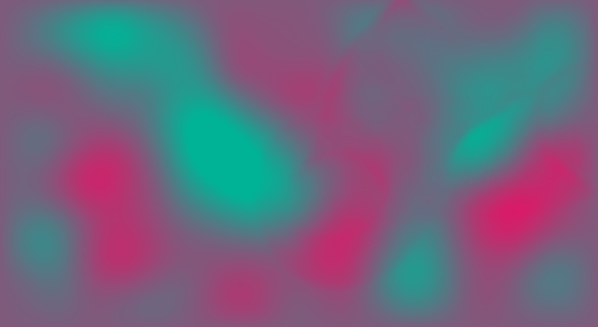

Mass-Spring-Damper Shader

This is a physics simulation of a mesh of masses attached to their four nearest neighbors with springs and dampers, all running in a GPU fragment shader with WebGL.
In the simulation, each pixel on the screen is a mass in a 2D mesh.
At each frame, the masses exert forces on each other and the resulting acceleration, velocity, and position of each mass is solved via
Euler integration. The vertical displacement of the masses is indicated by the color
of the pixel, blue pixels have positive vertical displacement, white have negative displacement, and pink is zero displacement.
Scrolling over with your mouse applies an upward force to the nearby pixels.
The physics is equivalent to a
discrete, damped 2D wave equation
or
cloth simulation. Masses at the edges of the screen are fixed with zero displacement,
making the simulation behave like a giant trampoline.
By
Amanda Ghassaei, code on
Github.